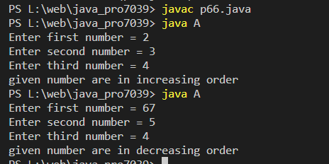

Write a java program that accepts three numbers from the user and check if numbers are in “increasing” or “decreasing” order.
Code:-
import java.util.Scanner;
class A
{
public static void main(String st[])
{
int a,b,c;
System.out.print("Enter first number = ");
Scanner s1=new Scanner(System.in);
a=s1.nextInt();
System.out.print("Enter second number = ");
Scanner s2=new Scanner(System.in);
b=s2.nextInt();
System.out.print("Enter third number = ");
Scanner s3=new Scanner(System.in);
c=s3.nextInt();
if(ab && b>c)
{
System.out.println("given number are in decreasing order");
}
else
{
System.out.println("given number are not in any order");
}
}
}
Output:-
